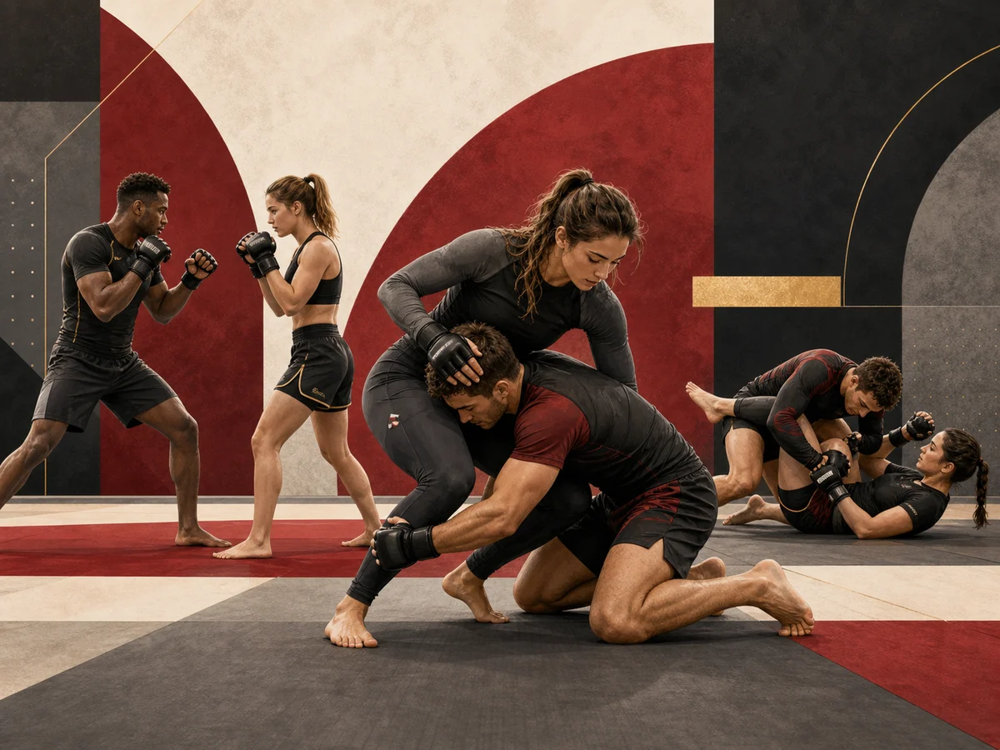

Principe
WUKF France explique que ces disciplines combinent des apports de pratiques comme le judo, la boxe ou le karaté afin de former une discipline avec ses propres spécificités.
Pratique représentée
Les disciplines mixtes sont présentées comme des sports de combat tridimensionnels associant des techniques issues de plusieurs arts martiaux et sports de combat.

WUKF France explique que ces disciplines combinent des apports de pratiques comme le judo, la boxe ou le karaté afin de former une discipline avec ses propres spécificités.
Sont mentionnées des techniques de percussion debout et au sol, des projections, des balayages, des clés articulaires et des étranglements sanguins.
WUKF France cite notamment Mixed Fighting et jiu-jitsu brésilien.